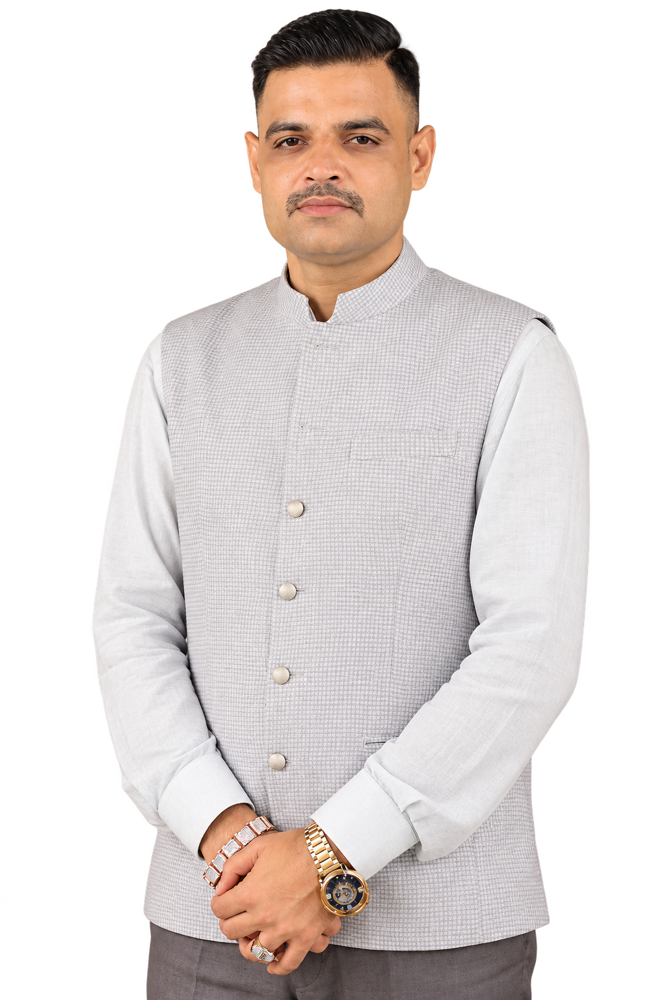
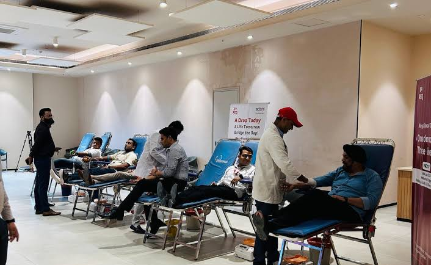
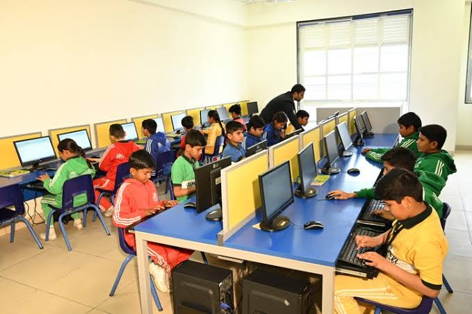
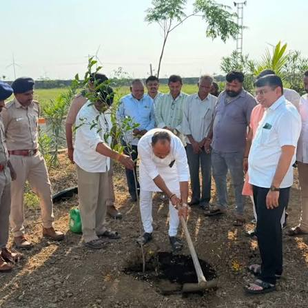

Blood Support
Rapid on-call donor dispatch across Morbi Civil & Saurashtra.
Request Donorયુવા શક્તિ, સેવા ભક્તિ
Carrying forward the humanitarian mission of Shri Deven Rabari — uniting youth power for 24/7 emergency blood support, healthcare aid, and rural education across Morbi district.

Service to humanity is devotion to the divine.
મોરબી જિલ્લામાં ૨૪ કલાક અવિરત કાર્યરત ઇમરજન્સી સેવાઓ અને સહાયતા કેન્દ્ર.
Rapid on-call donor dispatch across Morbi Civil & Saurashtra.
Request DonorJoin 6,200+ local youth donors ready for emergency response.
Sign Up TodayActive grassroots volunteering in healthcare and disaster relief.
Join the TeamEducational scholarships, orphan care, and rural health aid.
Contact WelfareSPEAK • ACT • CHANGE ના જીવનમંત્ર સાથે ૨૦૦૭ માં મોરબીમાં મેન્ટોર શ્રી દેવેનભાઈ એન. ગીડ (રબારી) દ્વારા યંગ ઈન્ડીયા ગ્રુપની સ્થાપના કરવામાં આવી. શિક્ષણ, ખેલકુદ, સંસ્કૃતિ અને જનહિત સેવાના ૭૯ જેટલા પ્રકલ્પોનું અમલીકરણ કરી ગ્રુપે મોરબી–સૌરાષ્ટ્ર–કચ્છ સહિત સમગ્ર રાષ્ટ્રમાં ગુજરાતને ગૌરવ અપાવ્યું છે.
યંગ ઈન્ડીયા ગ્રુપ પબ્લિસિટી નહીં, જરૂરિયાતમંદોની પ્રાયોરિટીનો પર્યાય છે. અમારી ટીમ – અમારી થીમ – અમારા મિશનમાં જોડાય તે દરેક યંગ ઈન્ડીયા ગ્રુપનો સદસ્ય છે.
વધુ જાણો (Read Full Story)Lives supported in Morbi Civil & Saurashtra
Grassroots cadre across 85 villages
Free checkups, spectacles, and medicines
Average rapid SOS response in Morbi urban limits

1,120 UnitsUniting industrial workers and youth leaders to eliminate seasonal blood shortages.

850 StudentsAcademic supplies and mentorship desks ensuring students remain in school.

2,500 SaplingsPlanting indigenous trees and leading sanitation awareness drives with local youth.
“We do not build institutions for name or fame; we gather the relentless energy of youth so no family in Morbi cries for a single unit of blood in the dead of the night. Leadership begins the second you choose to serve.”
“When my brother urgently needed rare AB-negative blood at 2 AM at Morbi Civil Hospital, the foundation helpline dispatched verified donors in under 20 minutes. Their promptness saved his life.”
Registered Public Charitable Trust No: E/1428/Morbi. Fully compliant with Gujarat Public Trusts Act, Section 12A, and 80G tax exemptions for all donor contributions.
Morbi Central Secretariat
Opp. Civil Hospital Road, Near Shanala Gate, Morbi – 363641, Gujarat
WhatsApp Helpline & Dispatch
+91 98250 00000 / +91 2822 220000
24 Hours Active Dispatch Desk